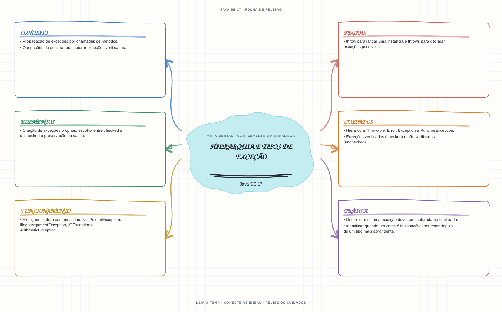

Ver mapa mental deste assuntoIdentificar exceções checked e unchecked e decidir quando declarar, capturar ou propagar.
Primeiro contato: aprenda o conceito e pratique antes de consultar os detalhes de prova. Voltar aos fundamentos se algum termo ainda for novo.
- Leia o objetivo e localize a ideia principal no conteúdo abaixo.
- Preveja o resultado, compile e execute o exemplo.
- Faça a atividade sem copiar a solução e confira a checagem comentada.
EXEMPLO DE CONSOLE
Veja a regra em execução
Antes de executar, anote sua previsão. Compile o exemplo com o JDK e compare a saída observada com as regras deste assunto.
Comandos para compilar e executar
javac -d target/bin src/04-excecoes/hierarquia-e-tipos-de-excecao/HierarquiaETiposDeExcecaoExample.java
java -cp target/bin HierarquiaETiposDeExcecaoExampleA execução imprime o resultado no console para você comparar com sua previsão.
Consultar código-fonte: HierarquiaETiposDeExcecaoExample.java
import java.io.IOException;
public class HierarquiaETiposDeExcecaoExample {
private static int converter(String texto) throws IOException {
try {
return Integer.parseInt(texto);
} catch (NumberFormatException excecao) {
throw new IOException("O texto nao contem um inteiro valido.", excecao);
}
}
public static void main(String[] args) {
System.out.println("=== Excecoes verificadas e nao verificadas ===");
System.out.println("NumberFormatException e unchecked; IOException e checked.");
try {
System.out.println("Texto convertido: " + converter("Java"));
} catch (IOException excecao) {
System.out.println("Excecao checked capturada: " + excecao.getClass().getSimpleName());
System.out.println("Causa original preservada: "
+ excecao.getCause().getClass().getSimpleName());
}
}
}
PRATIQUE AGORA
Faça uma pequena alteração por conta própria
Escreva um método que valide uma descrição vazia e lance IllegalArgumentException; capture a exceção e mostre a mensagem.
Concluído quando: o programa compilar, produzir o resultado esperado e você conseguir explicar a regra aplicada.
CHECAGEM RÁPIDA · Hierarquia e tipos de exceção
Qual é a diferença entre throw e throws?
Conferir resposta comentada
throw lança uma instância no fluxo de execução; throws declara no método tipos de exceções que podem ser propagadas.
Estude
- Hierarquia
Throwable,Error,ExceptioneRuntimeException. - Exceções verificadas (checked) e não verificadas (unchecked).
- Obrigações de declarar ou capturar exceções verificadas.
throwpara lançar uma instância ethrowspara declarar exceções possíveis.- Exceções padrão comuns, como
NullPointerException,IllegalArgumentException,IOExceptioneArithmeticException. - Criação de exceções próprias, escolha entre checked e unchecked e preservação da causa.
- Propagação de exceções por chamadas de métodos.
Verifique se consegue
- Determinar se uma exceção deve ser capturada ou declarada.
- Identificar quando um catch é inalcançável por estar depois de um tipo mais abrangente.
Como este capítulo se relaciona com cada exame
Fundamentos reaproveitáveis; confirme a profundidade no exame específico.
Base de estudo deste portal; confirme o mapeamento com o blueprint vigente.
Conceitos úteis; valide o escopo do blueprint para Java 21.
Orientação editorial sobre reaproveitamento do material; não representa objetivos oficiais nem garante cobertura do exame. Consulte o comparativo e as fontes da Oracle.